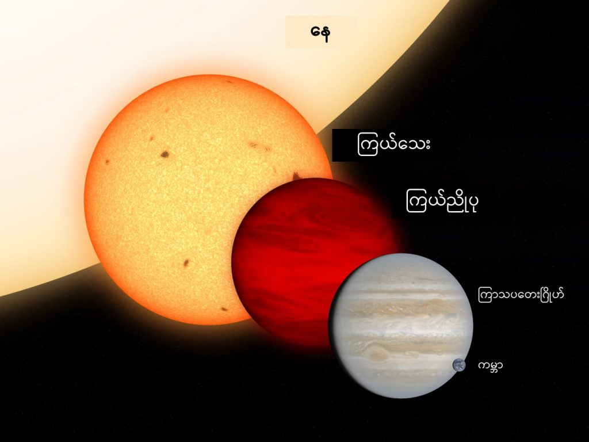
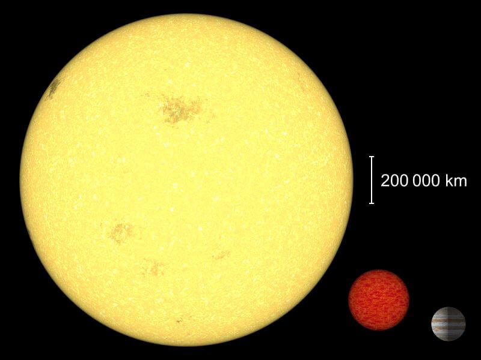

ပထမဆုံး ကြယ်နဲ့ ဂြိုဟ် ဘာကွာလဲ ဆိုတာကို အရင် ရှင်းဖို့ လိုပါလိမ့်မယ်။ အကြမ်းဖျင်း ပြောရရင် ကြယ်ဟာ ကိုယ်ပိုင် အလင်းရောင် ထုတ်ပေးနိုင်ပြီး ဂြိုဟ်ကတော့ ကိုယ်ပိုင် အလင်းရောင် ထုတ်မပေး နိုင်ပါဘူး။
ကျွန်တော်တို့ရဲ့ နေဟာလဲ ကြယ် အလယ်အလတ်စား တစ်လုံးသာ ဖြစ်ပါတယ်။ ကောင်းကင်မှာ မြင်နေရတဲ့ ကြယ်တွေ ဆိုတာ ကျွန်တော်တို့ နေလိုမျိုး အရာ ဝတ္ထုတွေ ဖြစ်ကြပါတယ်။ နေလိုပဲ ဟိုက်ဒရိုဂျင် ဓါတ်ကို ဟီလီယမ် ဒြပ် အနေနဲ့ ပြောင်းပြီး စွမ်းအင် ထုတ်ယူ နိုင်စွမ်း ရှိကြပါတယ်။
ဂြိုဟ်တွေကတော့ ဒီလို မဟုတ်ပါဘူး။ ကျွန်တော်တို့နဲ့ အနီးဆုံး ဂြိုဟ်ကို ကြည့်မယ်ကို ကမ္ဘာမြေ ကိုပဲ ပြရမှာပါ။ ကမ္ဘာဟာ ဂြိုဟ်တစ်စင်း ဖြစ်ပါတယ်။ သူ့မှာ ကိုယ်ပိုင် အလင်းရောင် ထုတ်ပေးနိုင်စွမ်း မရှိပါဘူး။
ကိုယ်ပိုင် အလင်းရောင် ထုတ်ပေးနိုင်တဲ့ ကြယ်တစ်စင်းဟာ ကိုယ်ပိုင် အလင်းရောင် မထွက်ရှိတဲ့ ဂြိုဟ်တစ်စင်း အဖြစ်ကို ပြောင်းသွားနိုင် ပါတယ်။ ဒါပေမယ့် ကြယ်တိုင်းကတော့ ဂြိုဟ်အဖြစ် ပြောင်းသွားနိုင်တာ မဟုတ်ပါဘူး။ ကြယ်တွေ ထဲမှာမှ Brown Dwarf လို့ခေါ်တဲ့ ကြယ်ညိုပု လေးတွေကသာ ဂြိုဟ်အဖြစ် ပြောင်းသွားနိုင်တာ ဖြစ်ပါတယ်။

Brown Dwarf ဆိုတာ ဘယ်လိုကြယ်မျိုးလဲ
ကြယ်ညိုပု (Brown Dwarf) ဆိုတာကို တကယ်တမ်း ပြောရရင် ကြယ်မကျ ဂြိုဟ်မကျ ဟိုမရောက် ဒီမရောက် ကြယ်လို့ ပြောရမယ် ထင်ပါတယ်။ ထုံးစံတော့ ကြယ်တွေရဲ့ အတွင်းထဲမှာ ဟိုက်ဒြိုဂျင် ကနေ ဟီလီယမ် ပြောင်းပေးတဲ့ နျူကလိယ အဏုမြူ ဓါတ်ပြုမှု ဖြစ်စဉ် ဖြစ်ပွားပါတယ်။ဒီ ဖြစ်စဉ်မှာ ဟိုက်ဒြိုဂျင် အက်တမ် ၄ လုံးပေါင်းပြီး ဟီလီယမ် အက်တမ် တစ်လုံး ဖြစ်လာပါတယ်။ ဒီလို ပြောင်းသွားတဲ့ ဖြစ်စဉ်မှာ ဒြပ်ထု အချို့ ပျောက်ဆုံး သွားပါတယ်။ ဒီ ပျောက်ဆုံးသွားတဲ့ ဒြပ်ထုဟာ စွမ်းအင် အဖြစ်ကို ပြောင်းလဲ သွားတာပါ။
ဒီ နျူကလိယ ဓါတ်ပြုမှုကို နျူကလိယ ဖျူးရှင်း (Nuclear Fusion) လို့ ခေါ် ပါတယ်။ ဒီ နျူကလိယ ဖျူးရှင်းက ထွက်လာတဲ့ စွမ်းအင်ဟာ အပူ၊ အလင်းရောင်နဲ့ ရေဒီယို လှိုင်းတွေ အနေနဲ့ ထွက်လာကြတာ ဖြစ်ပါတယ်။
ဒါပေမယ့် အခု ကျွန်တော်တို့ ပြောမယ့် ကြယ်ညိုပုဟာ သာမန် ကြယ် အမျိုးအစား မဟုတ်ပါဘူး။ သူ့မှာ အခြားကြယ်တွေလို နျူကလိယ ဓါတ်ပြုမှု မရှိပါဘူး။ ဒါ့ကြောင့် အချို့ နက္ခတ် ပညာရှင် တွေက ကြယ်ညိုပု တွေကို ကြယ် လို့တောင် အသိအမှတ် မပြုချင် ကြပါဘူး။ ဘာ့ကြောင့်ဆို ဒီ ကြယ်ညိုပု တွေက အခြားကြယ်တွေလို ပြည့်စုံတဲ့ ကြယ်လက္ခဏာတွေ မရှိလို့ပါတဲ့။
ဒါဆို Brown Dwarfs တွေက ဂြိုဟ်တွေပေါ့
ကြယ်ညိုပု တွေဟာ ဂြိုဟ်လဲ မဟုတ် ပြန်ပါဘူးတဲ့။ ဘာ့ကြောင့်ဆို သူတို့ဟာ အခြား ကြယ် အဖွဲ့အစည်း တွေလိုပဲ ကြယ်အဖွဲ့အစည်းရဲ့ အလယ်ဗဟိုမှာ ထိုင်နေပြီး သူတို့ကို ပတ်နေတဲ့ ဂြိုဟ်တွေလဲ ရှိနေ တတ်ကြပါတယ်တဲ့။ဒီ ကြယ်ညိုပုတွေ ကြယ်အဖွဲ့အစည်းရဲ့ ဗဟိုမှာ ရှိနေတာဟာ ကျွန်တော်တို့ နေ က နေအဖွဲ့အစည်းရဲ့ ဗဟိုမှာ ရှိနေတာနဲ့ သဘော သဘာဝခြင်း အတူတူ ပါပဲ။ ဘာ့ကြောင့်ဆို ဒီ ကြယ်ညိုပု တွေဟာ သူတို့ရဲ့ ကြယ်အဖွဲ့အစည်း အတွင်းမှာတော့ ဒြပ်ထု အကြီးဆုံး ဖြစ်တာကြောင့် အလိုလို အလယ်ကို ရောက်သွားတာ ဖြစ်ပါတယ် (အလယ်မှာ ရောက်နေလို့ ဒြပ်ထု အကြီးဆုံး ဖြစ်နေတာလဲ ဖြစ်မှာပေါ့။)
ဒီ အချက်ကြောင့်လဲ Brown Dwarf ကြယ်ညိုပု တွေကို ဂြိုဟ်တွေ အနေနဲ့လဲ နက္ခတ် ပညာရှင် တွေက လက်ခံကြခြင်း မရှိပြန်ပါဘူး။
တနည်းအားဖြင့်တော့ ကြယ်မဟုတ်၊ ဂြိုဟ်မဟုတ် အရာတွေ ဖြစ်ကြပါတယ်။

ဒါဆို အလင်းရောင်ရော ထွက်သလား
ကြယ်ညိုပု တွေဟာ အမည်နဲ့ လိုက်အောင်ပဲ အလင်းရောင် ခပ်ဖျော့ဖျော့ ထုတ်လွှင့် ပေးနိုင်ပါတယ်။ တနည်းအားဖြင့်တော့ သူတို့မှာ ကိုယ်ပိုင် အလင်းရောင် ရှိကြပါတယ်။ဒါပေမယ့် ကြယ်ညိုပု တွေအတွင်းမှာ ဖြစ်တဲ့ အလင်းရောင် ဖြစ်စေတဲ့ ဓါတ်ပြုမှုက သာမန် ကြယ်တွေရဲ့ အတွင်းမှာ ဖြစ်ပေါ်တဲ့ နျူကလိယ ဖျူးရှင်း ဓါတ်ပြုမှုနဲ့ ကွာခြားပါတယ်။
သာမန် ကြယ်တွေမှာ ဟီလီယံ ဖြစ်ဖို့ ရိုးရိုး ဟိုက်ဒြိုဂျင် အက်တွေကို ပေါင်းစပ်ရတာ ဖြစ်ပါတယ်။ ဒီ အပြောင်းအလဲဖြစ်စဉ် ဖြစ်ဖို့ အလွန် ပြင်းထန်တဲ့ ဖိအားနဲ့ အပူချိန် လိုအပ်ပါတယ်။
အခု ကြယ်ညိုပု တွေထဲမှာတော့ ဟိုက်ဒြိုဂျင်ကနေ ဟီလီယံ ပြောင်းဖို့ လုံလောက်တဲ့ အပူချိန်နဲ့ ဖိအား မရှိပါဘူး။ ဒီတော့ ကြယ်ညိုပု တွေဟာ ဟိုက်ဒြိုဂျင်ကို ဟီလီယံ အနေနဲ့ မပြောင်းနိုင်ပါဘူး။ ဒါပေမယ့် လေးလံတဲ့ ဟိုက်ဒြိုဂျင် ဖြစ်တဲ့ deuterium ကိုတော့ ဟီလီယံ အဖြစ် ပြောင်းနိုင် ကြပါတယ်။
Deuterium မှာ ပုံမှန် ဟိုက်ဒြိုဂျင် အက်တမ်လို ပရိုတွန် တစ်လုံးထဲ ပါဝင်တာ မဟုတ်ပါဘူး။ Deuterium အက်တမ် တစ်လုံးမှာ ပရိုတွန် တစ်လုံး နဲ့ နျူထရွန် တစ်လုံးတို့ ပါဝင်ပါတယ်။ ဒါ့ကြောင့်လဲ ဒီ Deuterium အက်တမ် တွေဟာ ပုံမှန် ဟိုက်ဒရိုဂျင် အက်တမ်ထက် ပိုလေးပါတယ်။
ဒီလို မပြည့်စုံတဲ့ နျူကလိယ ဓါတ်ပြုမှု ဖြစ်စဉ်မှာ အပူ နဲ့ အလင်းရောင် အနည်းငယ် ထွက်လာပါတယ်။ သက်တမ်း နုတဲ့ ကြယ်ဖြူပု တစ်လုံးဟာ လိမ္မော်ရောင် နဲ့ အနီရောင် ရောထားတဲ့ ခပ်ရင့်ရင့် အရောင်မျိုး လင်းပါတယ်။
ဟိုက်ဒရိုဂျင် ဒြပ်လေး
အပေါ်မှာ ပြောခဲ့ သလိုပဲ deuterium မှာ ပရိုတွန် တစ်လုံး နဲ့ နျူထရွန် တစ်လုံး ပါဝင် တည်ဆောက် ထားပါတယ်။ ဒီလို နျူထရွန် တစ်လုံး အပိုပါတဲ့ အတွက် အခြား အက်တမ် တွေက သူ့ကို လာပြီး ပေါင်းဖို့ ပိုပြီး လွယ်ကူ စေပါတယ်။ဒါပေမယ့် ဒီ ဒြူတီရီယမ် က ကြယ်တစ်စင်းမှာ သိပ် များများတော့ ရှိတာ မဟုတ်ပါဘူး။ အထူးသဖြင့် ကြယ်သေးသေးလေး သာဖြစ်တဲ့ ကြယ်ညိုပု လေး တစ်စင်းမှာ ပါဝင်တဲ့ ဒြူတီရီယမ် ပမာဏက သိပ်ပြီး များများ စားစား မရှိပါဘူး။ ဒီိတော့ ကြယ်ညိုပု တစ်စင်းအတွက် ဒီ ရှိစုမယ့်စု ဒြူတီရီယမ် ကို ကုန်အောင် သုံးဖို့ဆိုတာ အချိန် သိပ်တော့ ကြာလှတာ မဟုတ်ပါဘူး။
ဟိုက်ဒရိုဂျင်ဒြပ်လေး၏ ဖျူးရှင်း ဓါတ်ပြုမှု
ကြယ်ညိုပု တွေဟာ သူတို့ရဲ့ အတွင်းမှာ ရှိတဲ့ ဒြူတီရီယမ် ဒြပ်စင်တွေကို အသုံးပြုပြီး ဟီလီယမ် အဖြစ် ပြောင်းလဲတဲ့ နျူကလိယ ဖျူးရှင်း လောင်ကျွမ်းမှု အသေးစား လေးကိုတော့ ပြုလုပ်နိုင်ကြပါတယ်။ ဒီ လောင်ကျွမ်းမှုဟာ အချိန်ကာလ အားဖြင့်တော့ သိပ်ပြီး မကြာလှ ပါဘူး။ဒီကာလ အတွင်းမှာ ဟိုက်ဒရိုဂျင် ဒြပ်လေး တွေကို ပေါင်းစပ်ပြီး များပြားလှတဲ့ စွမ်းအင်နဲ့ အလင်းရောင်ကို ထုတ်လုပ် ပေးပါတယ်။ ဒါပေမယ့် ကြယ်ညိုပု ထဲမှာရှိတဲ့ ဒြူတီရီယမ် ဒြပ်စင်တွေ ကုန်သွားတဲ့ အချိန်မှာတော့ ဒီ နျူကလိယ ဖြစ်စဉ်ဟာ ရပ်ဆိုင်း သွားပါတယ်။
ဒီလို ရပ်ဆိုင်းသွား ပြီးတဲ့နောက် ကြယ်ညိုပု အတွင်း အပူ ထပ်မထုတ် နိုင်တော့တာမို့ ကြယ်ညိုပုရဲ့အပူချိန်ဟာ တဖြည်းဖြည်း အေးလာပါတယ်။ ဒီလို အေးလာတာနဲ့ အမျှ အလင်းရောင်လဲ တဖြည်းဖြည်း မှိန်လာပြီး နောက်ဆုံးတော့ ဧရာမ ဂြိုဟ်ကြီး တစ်စင်း အဖြစ်ကို ပြောင်းလဲ သွားမှာ ဖြစ်ပါတယ်။
ကြယ်ညိုပု တွေရဲ့ အပူနဲ့ အလင်းရောင် ထုတ်ပေးတဲ့ ကာလဟာ သိပ်တော့ ကြာလှတာ မဟုတ်ပါဘူး။ ဒီ ကာလဟာ အချိန်အားဖြင့် နှစ်သန်း အနည်းငယ် ကနေ နှစ်သန်း ရာဂဏန်းလောက်ထိပဲ ရှိမယ်လို့ ခန့်မှန်း ကြပါတယ်။
အပူချိန် ကျဆင်းသွားပြီး အလင်းရောင်လဲမထွက်တော့တဲ့ အချိန်မှာတော့ ဒီ ကြယ်ညိုပု တွေဟာ ကျွန်တော်တို့ နေအဖွဲ့အစည်း အတွင်းက ကြာသပတေးဂြိုဟ် (ဂျူပီတာ) နဲ့ ခပ်ဆင်ဆင် တူမယ်လို့ ဆိုကြပါတယ်။
ကြယ်ညိုပုတွေကို ဘယ်မှာရှာမလဲ
ကြယ်ညိုပု တွေဟာ အပူချိန် ကျသွားပြီး အလင်းရောင်လဲ မထွက်တော့တဲ့ အချိန်မှာ သာမန် ဂြိုဟ်တစ်လုံး ကဲ့သို့ ပြုမူ ပါလိမ့်မယ်။ သူတို့ဟာ အခြားနေရာကိုတော့ နေရာ ရွှေ့ပြောင်းသွား ခြင်းမရှိပဲ မူလ ကြယ်ဖြစ်ခဲ့စဉ်က သွားခဲ့တဲ့ လမ်းကြောင်းအတိုင်း ဆက်သွားနေမှာပါ။သူတို့ကို ပတ်နေတဲ့ ဂြိုဟ်တွေ ရှိခဲ့ရင်လဲ အရင်လိုပဲ ဆက်ပြီး ပတ်နေကြအုံးမှာ ဖြစ်ပါတယ်။ ဒါပေမယ့် အခြား ကြယ်အဖွဲ့အစည်း တွေလို ပူပြင်း တောက်ပတဲ့ ကြယ်အဖွဲ့အစည်း ဖြစ်မလာပဲ အေးစက် မှောင်မဲ နေတဲ့ ကြယ်အဖွဲ့အစည်း တစ်ခု အဖြစ်သာ ဖြစ်လာမှာ ဖြစ်ပါတယ်။
လက်ရှိ အချိန်ထိတော့ ကြယ်ညိုပုလို့ ယူဆရတဲ့အ ရာ ဝတ္ထုပေါင်း ၃,၀၀၀ လောက် ရှာဖွေ တွေ့ရှိ ထားပါတယ်။ ဒီလောက် အရေအတွက်ပဲ ရှာတွေ့သေး တာက သူတို့ဟာ စကြာဝဠာ ထဲမှာ ရှားပါးလို့တော့ မဟုတ်ပါဘူး။ အဓိက ကတော့ အလင်းရောင်မထွက်တာ၊ အလင်း ထွက်ရင်လဲ မှိန်နေတာကြောင့် မြင်ရဖို့ ခက်ခဲတာကြောင့် ဖြစ်ပါတယ်။
ဒီ ကြယ်ညိုပု တွေဟာ သူတို့ ဘဝရဲ့ အစပိုင်း အချိန်ပိုင်းလေး လောက်ပဲ ကြယ် အနေနဲ့ ပြုမူတာ ဖြစ်ပြီး နောက်ပိုင်း ကာလ တွေကိုတော့ မှောင်မည်း နေတဲ့ ဂြိုဟ်တစ်စင်း အနေနဲ့ ပြုမူ ပါတယ်။
အချို့ သိပ္ပံ ပညာရှင် တွေက ကျွန်တော်တို့ စကြာဝဠာ ထဲမှာ ရှိတဲ့ ကြယ်ညိုပု တွေရဲ့ အရေအတွက်ဟာ သာမန်ရိုးရိုး ကြယ်တွေရဲ့ အရေအတွက်နဲ့ သိပ်မကွာ ဘူးလို့ ယူဆကြပါတယ်။ ဒီ ကြယ်ညို ပုတွေ အားလုံးဟာ နောက်ဆုံးမှာတော့ ဂြိုဟ်ကြီး တစ်စင်း အနေနဲ့ အဆုံးသတ် သွားကြရမှာပဲ ဖြစ်ပါတယ်။
Reference:
Can a star turn into a planet? | Ask Astronomer
Can a star turn into a planet? | West Texas A&M University